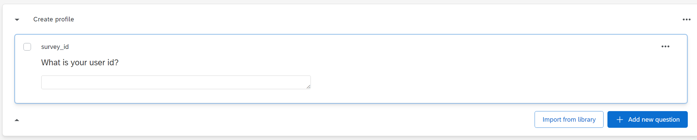
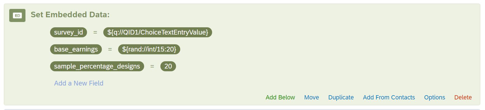
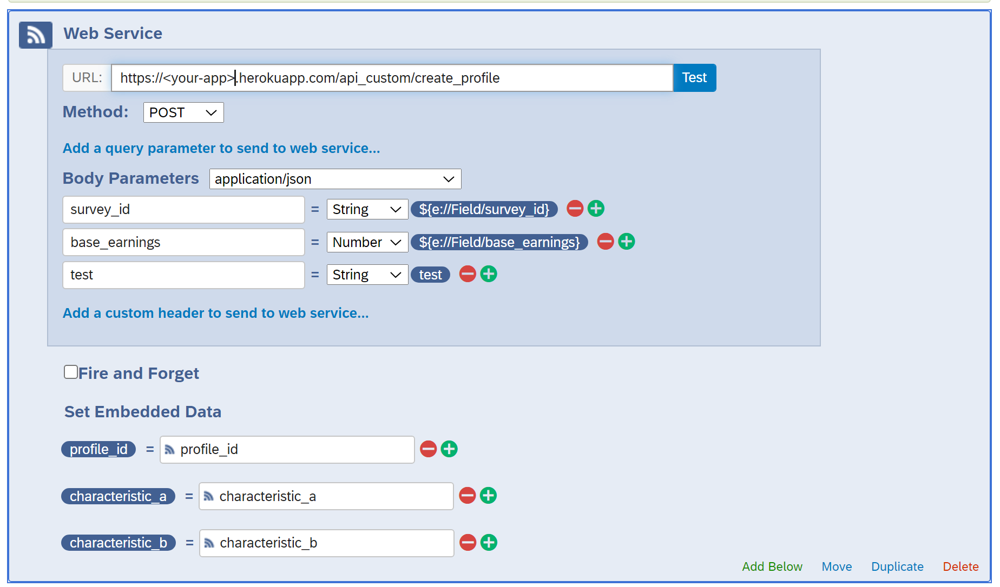
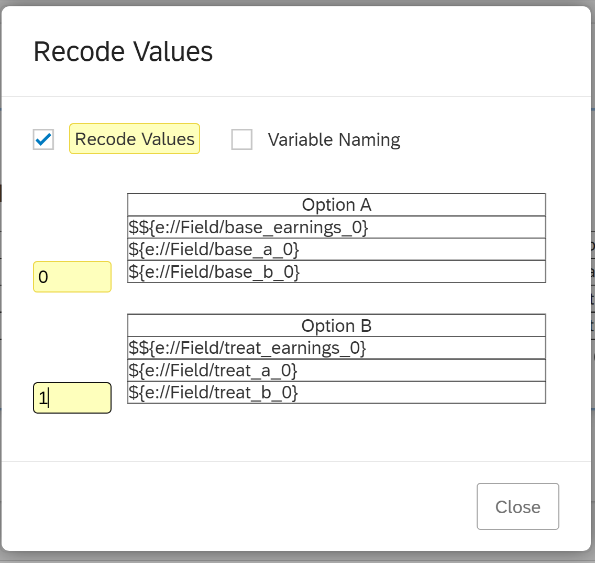
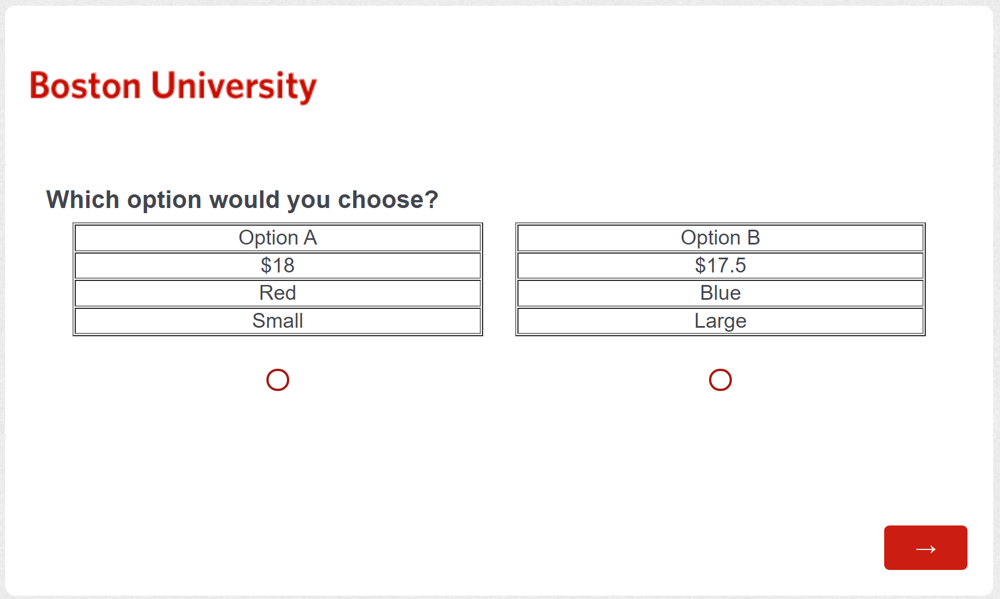
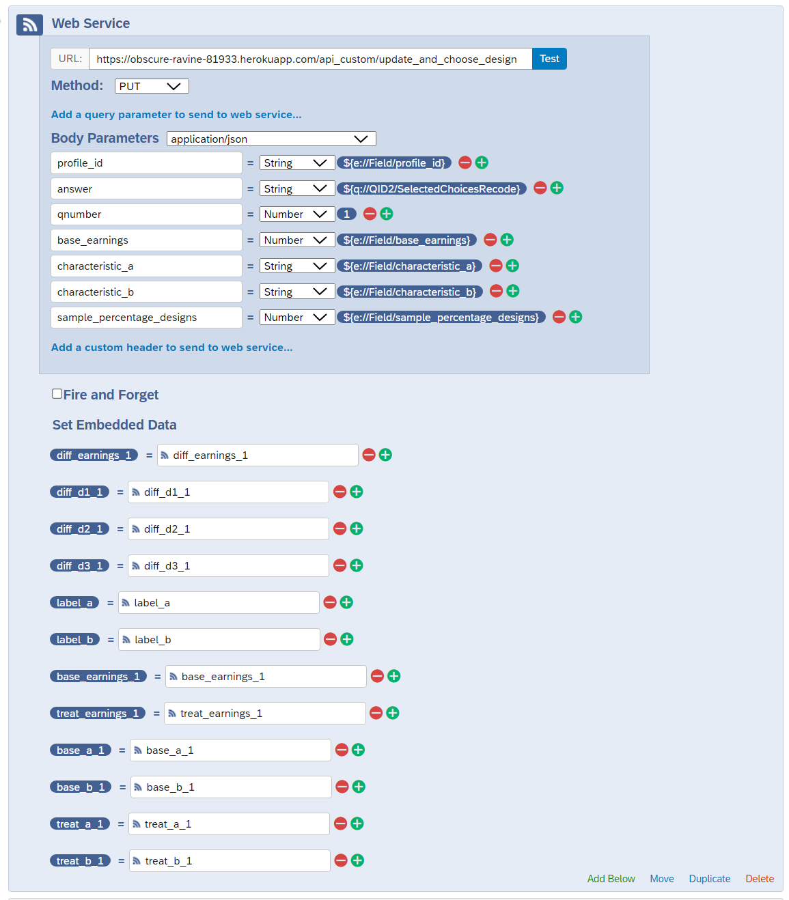
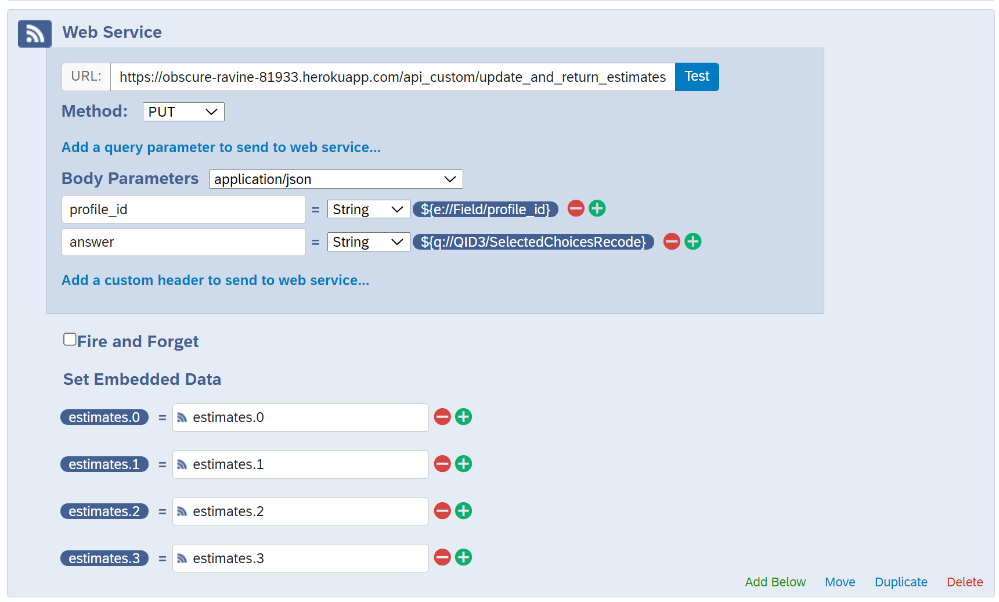

This document details how to set up your own application to run a Bayesian Adaptive Choice Experiment (BACE). You will create a REST API with a backend PostgreSQL database that you can access from other web applications or survey software. To set up the application, you will need basic familiarity in working from the command line and a basic knowledge of SQL and JavaScript.
As the user, you will specify a set of designs or questions that can be asked to each user. A design is an array that represents a question you can ask a user. You will also specify a range of preference parameter values in thetas. These represent possible preferences that you think an individual might have, and the goal is to find out which of these rows are the most likely. You will then define a likelihood function that calculates the probability of choosing each option for a given design * theta pair. Given these modeling components, you will set up an application that you can query to run an adaptive experiment. The database will perform all computation, and you can access results via your own application or an external survey website by making web queries to this application.
In this section, we describe how to clone this repository, create your Node.js application, and deploy the application on Heroku. Before we begin, you will need to install Git and the Heroku CLI on your personal computer. You'll also need to make a Heroku account.
After installing these programs, you can clone the repository to work locally and deploy your application so that it is hosted on an external Heroku server. Note, this tutorial uses Heroku because it offers a free tier that is useful for development, and the process for setting up your application and attaching a PostgreSQL database is user-friendly. If you are familiar with hosting web applications using other means (e.g. AWS, Azure, Digital Ocean, etc.), you can host your application there and use another service to host your PostgreSQL database.
Open your system command prompt and navigate to the folder that you want to use.
for Linux:
$ cd /home/user/my_project
for macOS:
$ cd /Users/user/my_project
for Windows:
$ cd C:/Users/user/my_project
You can clone a repository from the command line using git clone <url>.
$ git clone https://github.com/mhdrake/bace_backend.git
This creates a copy of our repository on your local computer.
Go to the file ./user_modules/user_defaults.js. This file specifies default values for how you want your application to run. For now, update author_name with your name. The other variables in this file specify default values for how the algorithm should run. These can be changed now or at another time. Make sure to save the file after you have made any changes to this document.
// Input your name here
const author_name = 'Your Name Here';
Detailed instructions for how to create a Heroku application can be found here.
First, create an app using the heroku create CLI command.
$ heroku create
This creates a new, empty application on Heroku. You can find the Web URL and other application specific information by running heroku apps:info. This is the URL that you will use to access your API. Next, add changes you have made to your application and push these changes to be hosted on Heroku.
$ git add .
$ git commit -m 'Deploy BACE'
$ git push heroku main
When this runs successfully, your application code will be pushed to a remote repository hosted on Heroku, and your application will be running. You can confirm that your application is running by opening up a web browser and pasting your applications URL, https://<your-apps>.herokuapp.com/, into the address bar. In your browser window, you should see:
Bayesian Adaptive Choice Experiment (BACE)
Author: <your-name>
Your application is up and running. For more information, check out our GitHub repository.
If you see this message, great news! Your application is now up and running and you can start updating the code to meet your specific needs.
Changes to code within your repo will not be implemented on your application until you push these changes to Heroku. You can do this from the command line using Git. After you've made changes and saved them, push the changes using:
$ git add .
$ git commit -m 'Description of changes'
$ git push heroku main
In the next section, we will create a database and connect your application to this database.
In this section, we describe how to configure your database to your personal experiment and deploy your database on Heroku Postgres. Note, there is no requirement to host your database using Heroku Postgres; you can use any hosting service that you feel comfortable with.
The key files that will be used to deploy your data base are located in ./database_scripts/.
./database_scripts/db_create_tables.sql: This file specifies table schemas for your database and creates functions that will be used to fill these tables../database_scripts/db_functions.sql: This file specifies SQL queries that are used by the algorithm to choose future question designs. You do not need to make changes to this file unless you want to add additional features or functions that can be used in your database../database_scripts/db_user.sql: This file is used to populate the database based on your experimental design. You will update this file to specify preference parameters, design (question) structures, and a likelihood function that relate to your problem.In this section, you will update ./database_scripts/db_user.sql to describe the parameters specific to your choice experiment. Create and deploy a Postgres database that is populated with the data necessary for you experiment. Learn how to interact with your database from the terminal and upgrade/delete your database.
There are four main tables that store required information: designs, thetas, full_likelihood, and profiles.
designs: Table of question design specifications. Each discrete choice scenario is characterized by an index and an array of design attributes.
index_d: Primary key specifying unique designdesign: Array of parameter values describing a particular design.thetas: Table of possible preference parameter values.
index_t: Primary key specifying unique thetatheta: Array of preference parameter values.full_likelihood: Table of precomputed likelihood values
index_d: Primary key specifying likelihood vector under question index_dlikelihood: Array of length |thetas| specifying the likelihood of choosing the treated option.
profiles: Individual-specific information about posteriors and prior question designs.
profile_id: Primary key specifying unique profile.survey_id: String ID used when generating the profile. E.g. a user's MTurk ID or Prolific ID.design_history: Array of previous designs that have been shown to profile_id.keep_indices: Array specifying the subset of thetas that are under consideration.posterior: Array where posteriorj is the current probability that thetaj is true conditional on the design and answer history.sample_percentage_theta: sample_percentage_theta% of rows from thetas that were sampled when creating a new profile.
The schemas for these tables along with functions that will be used to insert values into these tables are defined in ./database_scripts/db_create_tables.sql.
Next, you will specify what values to fill these tables with for your specific application. Open up the file ./database_scripts/db_user.sql.
Suppose each design
We can then model the probability of choosing option
This is a simple example of how you can model a choice problem by specifying a set of designs and thetas. In the following sections, we walk through how to set these values up in your code and use an example where each option can have three characteristics: Price, Quality X, and Quality Y. We then model our preferences to estimate how much someone values Quality X, Quality Y, and both Quality X and Y together.
Specify an array of size nparameters * 3. Each row in this multi-dimensional array is of the form [start, end, increment]. It will generate a sequence of possible parameter values for each parameter. gen_grid_thetas() then cross joins each sequence of parameters and populates the thetas table. An example with four parameters is shown below.
SELECT gen_grid_thetas(theta => ARRAY[
-- INSERT ARRAY PARAMETERS HERE TO GENERATE GRID
[-5, 5, 1], -- Parameter 1 values will be: [-5, -4, ..., 4, 5]
[-5, 5, 1], -- Parameter 2 values will be: [-5, -4, ..., 4, 5]
[-1.5, 1.5, 0.5], -- Parameter 3 values will be: [-1.5, -1, -0.5, 0, 0.5, 1, 1.5],
[1, 5, 2] -- Parameter 4 values will be: [1, 3, 5]
]);
The first 15 rows of the thetas table would look like:
index_t | theta
---------+----------------
1 | {-5,-5,-1.5,1}
2 | {-5,-5,-1.5,3}
3 | {-5,-5,-1.5,5}
4 | {-5,-5,-1,1}
5 | {-5,-5,-1,3}
6 | {-5,-5,-1,5}
7 | {-5,-5,-0.5,1}
8 | {-5,-5,-0.5,3}
9 | {-5,-5,-0.5,5}
10 | {-5,-5,0,1}
11 | {-5,-5,0,3}
12 | {-5,-5,0,5}
13 | {-5,-5,0.5,1}
14 | {-5,-5,0.5,3}
15 | {-5,-5,0.5,5}
To explain how to interpret a row in this table, consider the row with index_t = 5. This parameter represents an individual who values Quality X at -$5 and Quality Y at -5$. Also, having both Quality X and Quality Y together decreases an option's value by an addition $1. The final parameter models how sensitive the individual is to utility differences. Comparing the sets of preferences {-5, -5, -1, 1} and {-5, -5, -1, 5}, an individual with the latter preferences will choose the option with the higher utility more frequently (or can be interpreted as making mistakes less frequently). This final parameter is described more when we introduce the likelihood function below.
Next create the designs table. Each row in this table will represent a unique question design -- an array of parameter values that completely describes the variables of interest in a question design.
First, specify a list of design structures where each element is an array of design parameters.
INSERT INTO design_structures(design_structure)
VALUES
(ARRAY[1, 1, 1]),
(ARRAY[1, -1, 0]),
(ARRAY[1, 0, 0]),
(ARRAY[1, 0, 1]),
(ARRAY[0, 1, 0]),
(ARRAY[0, 1, 1]);
Next, specify the differences in earnings as a sequence that will be cross joined with every design_structure in design_structures.
SELECT gen_grid_designs(diff_earnings => ARRAY[-15, 15, 0.5]);
-- earnings differences in designs will be [-15, -14.5, -14, ..., 14, 14.5, 15]
The first ten rows in designs will look something like this:
index_d | design
---------+-----------------
1 | {-12,1,1,1}
2 | {-12,1,-1,0}
3 | {-12,1,0,0}
4 | {-12,1,0,1}
5 | {-12,0,1,0}
6 | {-12,0,1,1}
7 | {-11.75,1,1,1}
8 | {-11.75,1,-1,0}
9 | {-11.75,1,0,0}
10 | {-11.75,1,0,1}
Here, it is useful to explain how a design is interpreted in our example. Consider the design with index_d = 2 and consider the case where a user chooses between two options: Option A and Option B. In this example, the design tells us how Option B differs from Option A.
design[0] = -12: Option B costs $12 less.design[1] = 1: Option B has Quality X. Option A does not.design[2] = -1: Option B does not have Quality Y. Option A does.design[3] = 0: Options B and A have the same value for the interaction of having Quality X and Y. Neither option has both qualities together.
We could then represent these two choices as:
| Option A | Option B | |
|---|---|---|
| Cost | $P | $P-12 |
| Quality X | 0 | 1 |
| Quality Y | 1 | 0 |
Your code or survey software will transform the numerical design vector into a question form that can be asked to respondents. Examples for how to do this within the application are provided in Example: Setup API to Process Database Output.
Specify a likelihood function that returns the probability of choosing the treated option for each design x theta pair:
Consider the example defined above. Let
The difference in utility from the treated and base option is then given by:
We then model the probability of choosing the treated option using the standard logistic function:
where
Your implementation of the likelihood function depends on the interpretation of the theta and design variables in your application. We implement the likelihood function described above shown in the code below:
/*
STEP 3: Update Likelihood Function
Input
design: array of design parameters defined in Step 2
theta: array of coefficient parameters defined in Step 1
-- Return likelihood of choosing the treated option
*/
CREATE OR REPLACE FUNCTION likelihood_func(design float[], theta float[])
RETURNS float
AS $$
DECLARE
util_diff float;
likelihood float;
utility_function text;
BEGIN
-- Note, PostgreSQL arrays are 1-based. E.g. x = ARRAY[10, 4, 7] -> x[1]=10, x[2]=4, ...
-- util_diff = u(treat) - u(base)
util_diff := design[1] + design[2] * theta[1] + design[3] * theta[2] + design[4] * theta[3];
-- Likelihood of choosing the treated option. Use exp_safe here to avoid overflow errors
likelihood := 1.0 / (1.0 + exp_safe(-1.0 * theta[4] * util_diff));
RETURN likelihood;
END;
$$ LANGUAGE plpgsql;
After completing Steps 1 through 3, make sure to save the changes to your file. Once you have finished specifying parameters for designs, thetas, and the likelihood function likelihood_func, you can proceed forward to populate your database tables with these values. Note, the file ./database_scripts/examples/example_wtp_db_user.sql provides an example for how to set up your database for calculating WTP for a single characteristic. That folder may contain additional example scripts over time.
This section explains how to provision a database using Heroku Postgres and fill the tables required by the algorithm. For further details, see the Heroku Postgres guide online.
The command heroku addons will display possible add-ons provisioned to your existing Heroku application. To create a new database that is attached to your application, use the following command:
$ heroku addons:create heroku-postgresql:<PLAN_NAME>
Possible Heroku Postgres plans can be found online. The hobby-dev tier is free. We recommend using this hobby-dev tier and a sparse parameter space while developing your application. Once you are ready to deploy your survey, you can make the parameter space finer and upgrade to a higher database tier to make sure that your application has the RAM/storage necessary to function at scale.
It will take a moment to prepare your database. You can monitor the status of the database using the heroku pg:wait command.
$ heroku pg:wait
The status will transition from '...preparing' to '...available' when the database is provisioned. Now, you can proceed to creating the contents of your database.
After provisioning your database, you can make sure that this database is attached to your application by rerunning the command heroku addons. A new heroku-postgresql will be visible along with the chosen plan, monthly pricing, and current state of the database.
$ heroku addons
Add-on Plan Price State
────────────────────────────────────────────── ─────────── ───────── ───────
heroku-postgresql (postgresql-regular-48521) hobby-dev free created
└─ as DATABASE
Next, export the DATABASE_URL to an environment variable for your app so that your Heroku application can connect to your Postgres database locally.
-- for Mac and Linux
$ export DATABASE_URL=postgres://$(whoami)
-- for Windows
$ set DATABASE_URL=postgres://$(whoami)
You can connect to this database from your local computer using the Heroku CLI. For example, you can use heroku pg:info to check the status of your database or use heroku pg:wait to monitor the status of your database and see when it becomes available.
To interact with your remote database and issue commands directly, you can use the command:
$ heroku pg:psql
This creates an interactive terminal through which you can access your Postgres database. Here, you can now run standard psql commands and interact with your database.
For example, you can look at the tables available within your database using the command \dt. For now, this will return 'Did not find any relations' because our database is currently empty.
Currently, your online database is empty, but we can create the database using the file ./database_scripts/db_create_tables.sql. You can run any .sql file located on your local computer as a script in your Heroku database using the following command:
$ heroku pg:psql -f 'path/to/file/file_name.sql'
In particular, we will use this method to create the database using our ./database_scripts/db_create_tables.sql script. Depending on the size of your database and your Heroku Postgres tier, the following scripts script can take an hour or more to run. For smaller experiments with a small number of parameters, this process will happen quickly.
Note, DO NOT exit the command line while these files are running. This will terminate the script and could lead to some of the tables not being created entirely. We describe a few queries to run to make sure your database was generated correctly at the end of the section..
To create the table schemas, run:
$ heroku pg:psql -f './database_scripts/db_create_tables.sql'
--> Connecting to postgresql-database-name
To create functions that will be used to insert data into tables and select future designs, run the file:
$ heroku pg:psql -f './database_scripts/db_functions.sql'
Finally, run the code that populates the tables in your database. Note, this can take a while depending on the size of parameters you consider and the tier of your Heroku Postgres plan.
$ heroku pg:psql -f './database_scripts/db_user.sql'
After all three files have been run, your database will be provisioned and connected to your application.
In this section, you will learn how to run a few example queries from your database using an interactive terminal. We will also confirm that your database looks like you expect it to. First, open up a connection to your database from the command line:
$ heroku pg:psql
List the tables that have been created in your database using the command \dt. You should see something similar to what is shown below.
\dt
List of relations
Schema | Name | Type | Owner
--------+-------------------+-------+----------------
public | design_structures | table | xyzxyzxyzxyzxy
public | designs | table | xyzxyzxyzxyzxy
public | full_likelihood | table | xyzxyzxyzxyzxy
public | profiles | table | xyzxyzxyzxyzxy
public | thetas | table | xyzxyzxyzxyzxy
Next, run a query to look at the first 5 rows of your thetas table.
$ SELECT * FROM thetas LIMIT 5;
index_t | theta
---------+----------------
1 | {-5,-5,-1.5,1}
2 | {-5,-5,-1.5,3}
3 | {-5,-5,-1.5,5}
4 | {-5,-5,-1,1}
5 | {-5,-5,-1,3}
(5 rows)
Run a query to look at the first 5 rows of your designs table and confirm that these look as expected.
SELECT * FROM designs LIMIT 5;
index_d | design
---------+--------------
1 | {-12,1,1,1}
2 | {-12,1,-1,0}
3 | {-12,1,0,0}
4 | {-12,1,0,1}
5 | {-12,0,1,0}
Finally, run the following command which will provide some output to make sure that your tables have been filled:
SELECT exit_message();
NOTICE:
Number of designs: 582
Number of full_likelihood designs: 582
Number of thetas: 2541
Length of likelihood array in full_likelihood: 2541
Number of rows in full_likelihood containing null values: 0
Note, the number of rows in designs should equal the number of rows in full_likelihood since we save a likelihood array for each index_d. Also, the number of rows in thetas should equal the length of the likelihood array in full_likelihood since each element in this array represents the probability of choosing the treated option for a given designxtheta pair. The final row tells us whether any likelihood array in the full_likelihood table contains null values; this value should equal 0.
If any of these are not true, make sure to check that you specified steps 1 through 3 correctly. After saving any changes, follow the steps in Populate Database with User Specifications to run ./database_scripts/db_create_tables.sql and ./database_scripts/db_user.sql again. Rerun the tests from this section to make sure that your database is now filled correctly.
When you're finished running sample queries on the database, you can exit the interactive terminal using \q.
You may want to make changes to your database for a variety of reasons. Perhaps, you want to make the parameter space under consideration finer or increase the range of question designs that you want to choose from. Alternatively, you may want to upgrade to a higher Heroku Postgres tier to increase speed and storage capacity when you move from developing your application to deploying a large-scale survey.
This section describes how you can make changes to your database. Be careful not to delete sensitive data when following the steps below. If you've already collected information from respondents that you need, make sure to save this information accordingly before deleting anything.
If you have not collected responses yet or do not have any sensitive data in your database, you can delete your database and follow the steps above to recreate a new database using a higher tier. First, delete the database using the command:
$ heroku addons:destroy heroku-postgresql:<PLAN_NAME>
If you forgot the plan name that you are using, you can find this out by running heroku addons.
After deleting the database, you can make any relevant changes to ./database_scripts/db_user.sql, ./database_scripts/db_create_tables.sql, or ./database_scripts/db_functions.sql and provision a database using a higher tier. For more information on choosing the right tier, look here: Choosing the Right Heroku Postgres Plan.
If you want to migrate your database to a Heroku Postgres tier with more storage and RAM, follow the steps here: Changing the Plan or Infrastructure of a Heroku Postgres Database
This section describes how to perform the key API requests for the BACE procedure. Throughout, we will provide examples of how to make these requests using Python and JavaScript, but you can use any language that can perform https requests to make these queries. This section describes the four main API calls necessary for running a choice experiment using this package.
Note, to test API calls more conveniently you can use Postman, which offers a free tier, or some other API client.
Before we begin making API requests, you can change default values for how questions are chosen by going to ./user_modules/user_defaults.js.
allow_repeated_designs: Determines whether the algorithm can show the same question to respondents twice:
true allows repeated designsfalse does not allow repeated designsdefault_sample_percentage_theta: Determines the percentage of rows from thetas that are randomly selected and assigned as possible parameter values for an individual.
default_sample_percentage_designs: Determines the percentage of questions to randomly search over during each round when choosing the optimal design.
designs. The timing to compute the next question is roughly linear in the number of designs considered, so choosing a smaller X value can significantly speed up the time between questions. For example, if X = 50%, then the algorithm considers half of the question designs in the grid and will take about 50% of the time to choose each question.// Should the algorithm consider designs that have already been shown to a respondent?
const allow_repeated_designs = Boolean(false); // true if yes, false if no
// Percentage of rows from theta to randomly sample and assign to each profile. Default 100 - All rows.
const default_sample_percentage_theta = 100;
// Percentage of question designs to randomly search over when choosing the optimal design each round. Default 100 - All rows
const default_sample_percentage_designs = 100;
You need to create an entry in the profiles table for each respondent. This table stores the respondent's posterior estimates, design history, and other profile-specific information. You will make a POST request to https://<your-app>.herokuapp.com/api_raw/create_profile. Include the following parameters in the body of your request:
survey_id: String ID used when generating the profile. E.g. a user's MTurk ID or Prolific ID.sample_percentage_theta (optional): The percentage of rows from thetas to sample when generating a profile-specific parameter array. This value defaults to 100 (sampling all rows).This query generates a profile for the individual with a uniform prior over the parameters selected for that individual and then returns a unique profile_id for the individual. Store this variable for the user so that you can access their profile in future calls.
Examples for how to create a profile and print the response are shown below for both JavaScript using fetch and Python using the requests library.
JavaScript
var myHeaders = new Headers();
myHeaders.append("Content-Type", "application/json");
var raw = JSON.stringify({
"survey_id": "users-survey-id"
});
var requestOptions = {
method: 'POST',
headers: myHeaders,
body: raw,
redirect: 'follow'
};
var url = "https://<your-app>.herokuapp.com/api_raw/create_profile";
fetch(url, requestOptions)
.then(response => response.json())
.then(result => console.log(result))
.catch(error => console.log('error', error));
Python
import requests
import json
url = "https://<your-app>.herokuapp.com/api_raw/create_profile"
payload = json.dumps({
"survey_id": "users-survey-id",
})
headers = {
'Content-Type': 'application/json'
}
response = requests.request("POST", url, headers=headers, data=payload)
print(response.json())
Now that you have a profile created for that user, you can choose the first design by making a PUT call to https://<your-app>.herokuapp.com/api_raw/choose_first_design. Include the following variables in the body of your request:
profile_id: User-specific profile id that is created from the call to https://<your-app>.herokuapp.com/api_raw/create_profile.sample_percentage_designs (optional): This specifies the percentage of rows in designs to consider when choosing the optimal question.Example queries in JavaScript and Python are shown below.
var myHeaders = new Headers();
myHeaders.append("Content-Type", "application/json");
var raw = JSON.stringify({
"profile_id": 1,
"sample_percentage_designs": 50
});
var requestOptions = {
method: 'PUT',
headers: myHeaders,
body: raw,
redirect: 'follow'
};
var url = "https://<your-app.herokuapp.com/api_raw/choose_first_design";
fetch(url, requestOptions)
.then(response => response.json())
.then(result => console.log(result))
.catch(error => console.log('error', error));
import requests
import json
url = "https://<your-app>.herokuapp.com/api_raw/choose_first_design"
payload = json.dumps({
"profile_id": 1,
"sample_percentage_designs": 50
})
headers = {
'Content-Type': 'application/json'
}
response = requests.request("PUT", url, headers=headers, data=payload)
print(response.text)
Example output:
{
index_d: 289,
design: [0, 1, 1, 1]
}
Your application can then process the response and translate a specific question design into the format for your choice experiment.
After retrieving an answer to the previous question, you can store the user's answer. Send a new PUT request with the user's profile_id and answer to https://<your-app>.herokuapp.com/api_raw/update_and_choose_design. The database will update the posterior for that user and choose the next optimal design. Include the following variables in the body of your request:
profile_id: User-specific profile id that is created from the call to https://<your-app>.herokuapp.com/api_raw/create_profile.answer: User's answer to the last question
sample_percentage_designs (optional): This specifies the percentage of rows in designs to consider when choosing the optimal question.Suppose the individual chose the treated option to the previous question. Example queries in JavaScript and Python are shown below.
var myHeaders = new Headers();
myHeaders.append("Content-Type", "application/json");
var raw = JSON.stringify({
"profile_id": 1,
"answer": 1,
"sample_percentage_designs": 50
});
var requestOptions = {
method: 'PUT',
headers: myHeaders,
body: raw,
redirect: 'follow'
};
var url = "https://<your-app.herokuapp.com/api_raw/update_and_choose_design";
fetch(url, requestOptions)
.then(response => response.json())
.then(result => console.log(result))
.catch(error => console.log('error', error));
import requests
import json
url = "https://<your-app>.herokuapp.com/api_raw/update_and_choose_design"
payload = json.dumps({
"profile_id": 1,
"answer": 1,
"sample_percentage_designs": 50
})
headers = {
'Content-Type': 'application/json'
}
response = requests.request("PUT", url, headers=headers, data=payload)
print(response.text)
You will get back a new question design based on the user's previous response. Example output:
{
index_d: 278,
design: [-0.5, 1, -1, 0]
}
You can run this call repeatedly to select a new design after each response from the user.
After the final question in your experiment, you can retrieve posterior estimates. Send a new PUT request with the user's profile_id and answer to https://<your-app>.herokuapp.com/api_raw/update_and_return_estimates. The database will update the posterior for that user and return posterior estimates on theta. Include the following variables in the body of your request:
profile_id: User-specific profile id that is created from the call to https://<your-app>.herokuapp.com/api_raw/create_profile.answer: User's answer to the previous question
Suppose the individual chose the base option to the previous question. Example queries in JavaScript and Python are shown below.
var myHeaders = new Headers();
myHeaders.append("Content-Type", "application/json");
var raw = JSON.stringify({
"profile_id": 1,
"answer": 0
});
var requestOptions = {
method: 'PUT',
headers: myHeaders,
body: raw,
redirect: 'follow'
};
var url = "https://<your-app.herokuapp.com/api_raw/update_and_return_estimates";
fetch(url, requestOptions)
.then(response => response.json())
.then(result => console.log(result))
.catch(error => console.log('error', error));
import requests
import json
url = "https://<your-app>.herokuapp.com/api_raw/update_and_return_estimates"
payload = json.dumps({
"profile_id": 1,
"answer": 0
})
headers = {
'Content-Type': 'application/json'
}
response = requests.request("PUT", url, headers=headers, data=payload)
print(response.text)
You will get back an array of posterior estimates for theta that you can store.
Example response:
{
estimates: [4.077210796341252,-1.7633689724126045,0.23039175490862895,2.9955465280813383]
}
You can retrieve a random design using a GET call to https://<your-app>.herokuapp.com/api_raw/random_design. This will select a random design and return it. It will not update the posterior or design_history for a user. This call can be used to retrieve sample design output when testing code, to make sure that your API is up and running, or can be used to select questions randomly if you want to implement this feature for a subset of respondents.
JavaScript Implementation:
var myHeaders = new Headers();
myHeaders.append("Content-Type", "application/json");
var raw = JSON.stringify({
"survey_id": "test"
});
var requestOptions = {
method: 'GET',
headers: myHeaders,
body: raw,
redirect: 'follow'
};
var url = "https://obscure-ravine-81933.herokuapp.com/api_raw/random_design";
fetch(url, requestOptions)
.then(response => response.json())
.then(result => console.log(result))
.catch(error => console.log('error', error));
Python Implementation Using Requests:
import requests
import json
url = "https://<your-app>.herokuapp.com/api_raw/random_design"
payload = json.dumps({
"survey_id": "test"
})
headers = {
'Content-Type': 'application/json'
}
response = requests.request("GET", url, headers=headers, data=payload)
print(response.text)
These API calls are all that you need to communicate with your database and run an adaptive choice experiment. In most cases, you will need to transform the question design into a format that is human-readable. You can use your own application or custom coding within your preferred survey website to do this. We also detail how to do this using custom functions within your own application in the section below.
The heroku-postgresql:hobby-dev is useful for setting up your application and running simple calls. However, increasing |thetas| or |designs| can quickly increase the time needed to compute each question. If your parameter space is very fine, you consider a large number of designs, or you plan on deploying a survey to a large amount of people at once, you may need to increase your Heroku Postgres tier. This process is described in Making Changes to your Database or Heroku Postgres Plan. Note, higher tiers may no longer be free.
As mentioned at the start of this section, you can also decrease the time between questions by tuning the sample_percentage_designs parameter in ./user_modules/user_defaults.js or your API calls. Sampling a smaller percentage of designs means that you may not find the optimal design from the designs table. However, you still have a high likelihood of selecting a design that is very good. For example, randomly searching over only 30 questions means that there is a 95% probability that you select a question that is in the top decile. For this reason, randomly searching over your design space can be an easy way to improve speed if you tolerate some some randomness in which question from the grid is chosen.
The previous section (How to Query the API) describes how to make API calls and the key functions necessary to perform an adaptive choice experiment using our framework. Please make sure that you review this material before working through this example as knowledge of these function calls will be helpful for understanding this section.
In this section, we describe how to map a chosen design into a more human-friendly format. We then provide an example for how to implement a survey in Qualtrics. This step is helpful if you are using an external survey website like Qualtrics or SurveyMonkey where it can be more difficult to add custom code.
This section will involve making changes to the ./user_modules/characteristics.js file. This file contains functions that convert database output into a format that can easily be piped into your chosen survey application. characteristics_per_scenario defines the number of characteristics that will be shown with each scenario. The characteristics object is a JavaScript object that contains information about possible different characteristics that we could consider in a discrete choice framework. This object stores all possible values for your characteristics. In the example, we set three possible attributes. We are interested in finding out how the user values two out of these three characteristics.
For each respondent, characteristics_per_scenario characteristics are randomly selected from the characteristics object and assigned as characteristics A and B for an individual. We then perform an experiment to determine how much the user values characteristic A (theta[1]), characteristic B (theta[2]), and having both characteristics A and B together (theta[3]). We will also estimate how consistently the individual makes choices (theta[4]).
const characteristics_per_scenario = 2; // Set to 2 for example
const example_base_earnings = 100; // Example base_earnings used for returning test output
const characteristics = {
characteristic_x: {
label: 'Characteristic X - Color',
values: [
'Red',
'Blue'
]
},
characteristic_y: {
label: 'Characteristic Y - Size',
values: [
'Small',
'Large'
]
},
characteristic_z : {
label: 'Characteristic Z - Number',
values: [
0,
1
]
}
};
The function convert_design() maps questions to text values from the characteristics object. We have set up the function to map questions with two characteristics into a discrete choice framework with two options that are described by earnings and two characteristics. This function will generally differ for each user and depends on the structure of your design parameter.
transform_earnings(): how earnings are converted.sample_characteristics(): how characteristics are assigned to each survey respondent.check_answer(): how answers are checked.This section allows each user to flexibly interpret information from the database into a format that works with your desired survey website.
The code will randomly choose two characteristics from the characteristics object and assign these to be Characteristics A and B for that individual. This module translates question information from the database into the questions that your users will see.
Consider the following example. Suppose the base option has an earnings value of $10. Suppose characteristic_z is assigned as Characteristic A and characteristic_x is assigned as Characteristic B. The question format from an example query would be received as:
{
index_d: 202,
design: [1.5, 1, 0, 1]
}
This question information is mapped into a format that will be stored and used by the survey website using the convert_design() function.
Mapping:
design[0] = treat_earnings - base_earnings.
base_earnings_0 = 10treat_earnings_0 = 11.5design[1] = A Treat - A Base.
base_a_0 = 0treat_a_0 = 1design[2] = B Treat - B Base. From this, we know that the values for B are the same for Treat and Base. We then use design[3] to know that these are both valued at 1.
base_b_0 = characteristic_x.values[1] = Bluetreat_b_0 = characteristic_x.values[1] = BlueWe also store other variables like the raw design data and labels for A and B
{
"diff_earnings_0": 1.5,
"diff_d1_0": 1,
"diff_d2_0": 0,
"diff_d3_0": 1,
"label_a": "Characteristic Z - Number",
"label_b": "Characteristic X - Color",
"base_earnings_0": 10,
"treat_earnings_0": 11.5,
"base_a_0": "0",
"base_b_0": "Blue",
"treat_a_0": "1",
"treat_b_0": "Blue"
}
You can then display questions in a user-friendly format within your survey by accessing these variables.
| Base Option | Treated Option | |
|---|---|---|
| Price | $10.00 | $11.50 |
| Characteristic Z - Number | 0 | 1 |
| Characteristic X - Color | Blue | Blue |
In this section, we describe how to set up a survey that choose questions using your new API. We will set up a simple Qualtrics survey, but any survey framework/computer language that supports API calls can access your application. The API calls that we write here will deviate slightly from those described in How to Query the API because we need to transfer additional information back and forth between Qualtrics. This section assumes some familiarity in working with Qualtrics. You should be able to create survey questions and understand how to work with the survey flow. Links for some basic survey features can be found here:
The QSF file for the example survey described below is contained in ./qualtrics_tutorial/survey_example/bace_sample.qsf. To follow along, you can create a new survey in Qualtrics by importing this QSF file into Qualtrics. Instructions for importing surveys are available on the Qualtrics website.
First, use survey questions to collect information about your user that will be used to create the user's profile. The variables that we need to collect from the user or set within Qualtrics are survey_id and base_earnings. These variables can be generated within Qualtrics or can be collected from a user's responses. In this section, we will collect these values from the user and store them as embedded data. More detailed instructions for this process are described on the Qualtrics site: Embedded Data.
survey_id (string): A string that can identify each user and is used when creating their profile within the database.base_earnings (float): The earnings value for the base option. This can be based on user input or randomly generated from a list of values.In this section, we will collect survey_id from the user and set base_earnings randomly using embedded data. We will store these variables and use them in future API calls when creating profiles and choosing designs.
First, add a question that asks for the user's user id.

Open up the survey flow element. Underneath our create_profile block click 'Add Below' -> 'Embedded Data'. We can then access and store the answers from these questions as embedded data that can be used elsewhere in Qualtrics.
We can set survey_id equal to the user's answer to the survey_id question inserting piped text. We can also generate base_earnings to be a random integer between 15 and 20. The base price for each user will be randomly fixed at the number base_earnings. We store both as embedded data that can be accessed as variables throughout the survey.
At this time, also add an embedded data variable sample_percentage_designs. Set this variable to be a number between 0 and 100. This represents the percentage of the designs that you want to consider when choosing each question and will be used in future API calls. If you want the algorithm to choose questions faster, particularly if you have a dense design/parameter space, you can decrease this number. You will choose the optimal design from a random subset of X% of the designs table. Increasing this number means you consider a larger number of questions, and thus, the time between questions will be larger for higher percentages.

In this section, we will create a profile for the user by connecting to our application using a web service. The Qualtrics web service feature is described here.
Return to the survey flow. Add a web service element below the embedded data block that you just created.This feature allows us to send and receive information from a specific URL. To create our user's profile, we will use a POST request to our application. We add the survey_id and base_earnings variables to the body of our POST request as JSON variables. This API call will go to the URL https://<your-app>.com/api_custom/create_profile.
Qualtrics allows you to test API calls using the 'test' button. This sends your request to the specified URL and receives feedback, which you can add as embedded data. Note, embedded data variables will not be filled by Qualtrics until user's have input their data. For example, once a respondent answers the survey_id question the ${q://QID1/ChoiceTextEntryValue} will be replaced with the user's answer. If a test ever fails (particularly when debugging user-defined functions later on), click 'View Raw Data' to see what is being returned by your call. This message may help you find the issue.
We've added a feature that makes saving embedded data easier using this test button. Add test = 'test' as a body parameter to your request. This returns sample feedback that you can use to set up your Web Service to store embedded data. After sending a test request, you will receive a response indicating that a profile has been created for this survey id with a specific profile_id (if the 'test' parameter is set, then the profile_id will equal 0). Note this 'test' feature requires custom coding and is only implemented for the functions described below.
After running a test API call, we will need to store these variables as embedded data based on our API call, so select 'All' and click 'Add Embedded Data'. When a user arrives to this portion of the survey, the web service element will be triggered creating a new profile for that user. We store the user's profile_id and other profile-specific variables as embedded data.

Warning: Make sure to remove the test parameter after setting embedded data and before deploying. If the test parameter is set to "test", then you will not be running queries on your database
We can now review what's going on in the Web Service Element above:
https://<your-app>.com/api_custom/create_profile.profile_id and the values that are assigned as characteristic_a and characteristic_b for this individual.Now that you have created a profile, you can set up a web service to choose the first question. Add a new web service element below what you just used to generate the profile. You will now make a PUT request to https://<your-app>.com/api_custom/choose_first_design. Include the following parameters and include the following characteristics as body parameters. Each parameter is set using an embedded data field for the relevant parameter.
You can follow the same procedure to test an API call and set up your embedded data. Include the parameter test as 'test' in your request to set up embedded data, and make sure to delete this parameter before running your actual experiment.
Notice: Make sure to set all embedded data variables after each web service. This guarantees that they will be present in your exported data.
Now, we want to create a survey question that displays our question information. Return to the survey builder and create a new block titled 'Question 0'. Create a multiple choice question with a horizontal alignment and two questions. Add 'Which job would you choose?' as the question text. In the survey flow, make sure the new block comes after your web calls to create a profile and choose the first design.
You can insert piped text into this question which will be dynamically populated when the individual takes the survey. Note also that the 'Rich Content Editor...' is helpful for formatting text.
Copy and paste the following text into the text for each answer choice by clicking the dropdown next to 'Click to write Choice 1' -> 'Rich Content Editor' -> 'Source'. Once in source you can past html code. Note, you can format the questions however you like, but this formatting has worked well for us previously. Paste the Option A code in one answer and Option B code in another answer.
<! Option A>
<table border="1" cellpadding="1" cellspacing="1" style="width:320px;">
<tbody>
<tr>
<td style="text-align: center;">Option A</td>
</tr>
<tr>
<td>$${e://Field/base_earnings_0}</td>
</tr>
<tr>
<td>${e://Field/base_a_0}</td>
</tr>
<tr>
<td>${e://Field/base_b_0}</td>
</tr>
</tbody>
</table>
<! Option B>
<table border="1" cellpadding="1" cellspacing="1" style="width:320px;">
<tbody>
<tr>
<td style="text-align: center;">Option B</td>
</tr>
<tr>
<td>$${e://Field/treat_earnings_0}</td>
</tr>
<tr>
<td>${e://Field/treat_a_0}</td>
</tr>
<tr>
<td>${e://Field/treat_b_0}</td>
</tr>
</tbody>
</table>
After creating your question, make sure to set the recode value of the treated option (Option B) to equal the value of correct_recode_value in ./user_modules/characteristics.js (default = 1) and require the individual to choose a response. Recode values can be set using the 'Recode values' tab.

You can test your survey using the 'Preview' button. Enter a survey id and a base_earnings. The embedded data fields will be populated when they are displayed to the respondent.

You can update the posterior based on the previous answer and choose a new question using a PUT call to https://<your-app>.com/api_custom/update_and_choose_design. Return to the survey flow. Below the Question 0 block, add a new Web Service element to the URL above. You need to specify three values:
profile_id = ${e://Field/profile_id}answer = ${e://Field/<QID>/SelectedChoicesRecode} where <QID> is the Qualtrics question id for the previous question. This can be inserted by clicking 'Insert Piped Text' -> 'Survey Question' -> Previous Question -> 'Selected Choices Recode'. The steps are detailed in the photo below.qnumber = 1 This is the question number for the next question. This ensures that your embedded data matches the values in the next question and will be recorded in your exported data.base_earnings = ${e://Field/base_earnings}characteristic_a = ${e://Field/characteristic_a}characteristic_b = ${e://Field/characteristic_b}sample_percentge_designs = ${e://Field/sample_percentage_designs}Use the same method as above (insert default values) to test the response and add embedded data variables.

Then add a new question below with the same format as above but change the question number to match that of the web service above. Make sure that any question that uses output from a web service comes after that web service element in the Survey Flow. Repeat this process for as many questions as you'd like.
After the final question of your survey, you can calculate and store posterior estimates using a PUT request.
Make a put request to https://<your-app>.com/api_custom/update_and_return_estimates with the following elements:
profile_id = ${e://Field/profile_id}answer = ${q://<QID-last-question>/SelectedChoicesRecode}
Follow the same procedure to store embedded data variable using a test. If you want to view these estimates within your survey to confirm while debugging, you can pipe them into a question after this put request using the following text:
Posterior Estimates:
estimate.0: ${e://Field/estimates.0}
estimate.1: ${e://Field/estimates.1}
estimate.2: ${e://Field/estimates.2}
estimate.3: ${e://Field/estimates.3}
qnumber needs to be changed for each question. It should match the embedded data variables that will appear in the next question you ask.qnumber in the body parameter for that call. If you copy web service elements that are repeated, make sure to delete the embedded data variables that are saved, rerun a call with the 'test' parameter, and set embedded data variables based on that test call. This guarantees that the variables respondents see are saved in your data set.Add resources here for YouTube videos/instructional posts that are helpful for writing API calls.